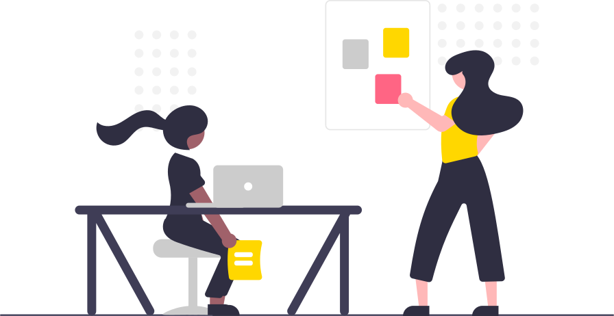
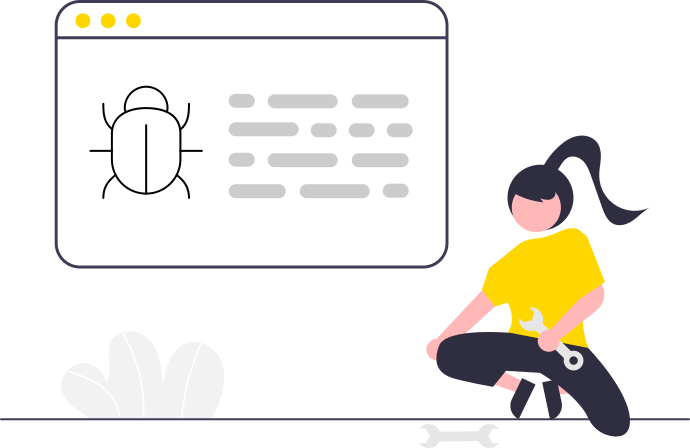

Get Started
This page will be your starting point for Galaxy, the go-to place when you need to refresh your knowledge once you have already gotten to know more about the Community.
On this page
Below you will find a step-by-step suggested pathway for you to follow as a newcomer, a student, an expert or just about anybody interested in using Galaxy.
Step 1: Get acquainted with Galaxy terminology
The Galaxy Glossary contains the terminology, acronyms and definitions. As a newbie, you will probably skim through this list, but later on in your journey you may come back to refer to it as it will help you get a better understanding of the Galaxy Ecosystem.
Step 2 : Get familiar with Galaxy

Public Servers
The easiest way to be able to follow our tutorials and learn first-hand about Galaxy is by using aPublic Galaxy Server. We recommend using one of these:
We also encourage you to create an account for the server you’ll be using to keep track of your histories and workflows.
Tutorials and tours
This curated table will take you through the basics of Galaxy. You can choose any tutorial in a variety of formats: Hands-on and Slides tutorials are more text-based while Recording and Interactive Tour are more visual-based.
Choose your best fit, experiment or try them all!
| Lesson | Slides | Hands-on | Recording | Interactive Tour |
|---|---|---|---|---|
| A short introduction to Galaxy | Slides: A short introduction to Galaxy | Hands-on: A short introduction to Galaxy | – | – |
| Galaxy 101 | – | Hands-on: Galaxy 101 | Recording: Galaxy 101 | – |
| Your first Galaxy Analysis | Slides: Your first Galaxy Analysis | – | Recording: Your first Galaxy Analysis | – |
| Galaxy Tour | – | – | – | Interactive Tour: Galaxy Tour |
| Galaxy Histories | – | Hands-on: Galaxy Histories | – | Interactive Tour: Galaxy Histories |
| How to reproduce published Galaxy Analysis | – | Hands-on: How to reproduce published Galaxy Analysis | – | – |
| Introduction to the GTN | Slides: Introduction to the GTN | – | Recording: Introduction to the GTN | – |
| How to contribute using Gitpod | – | Hands-on: How to contribute using Gitpod | Recording: How to contribute using Gitpod | – |
| How to create a new tutorial in the GTN | – | Hands-on: How to create a new tutorial in the GTN | Recording: How to create a new tutorial in the GTN | – |
Events
Before diving into Galaxy tutorials, you may check Galaxy events and see if there are any upcoming Galaxy Training events you could join. It is often easier and fun to learn together!
Galaxy Training Network
We have many more Galaxy Training materials! The Galaxy Training Network has a great list of tutorials on a variety of topics (Climate, Transcriptomics, Data Science, Development and more!) written and maintained by the world-wide Galaxy Community.
Galaxy Help & Bug Reports

Have a bug or an error you haven’t been able to solve? Do you have a question that you haven’t found already answered in the FAQs?
Check our issues dedicated page for known issues, problems and tips. Galaxy uses GitHub issues for tracking down bugs and feature requests, please make sure you search the list for duplicates before creating a new issue.
If you couldn’t find a solution, reach out to the Galaxy Help Forum as the place to ask your questions related to Galaxy use or create an issue yourself. Either way, we are more than happy to help you out!
Mailing lists
If you haven’t used mailing list before they are simply a list of addresses to which the same information is being sent, just another way to communicate and interact with the Community. See them here and remember don’t be afraid to ask questions.
Galaxy Publication Library
Check what other members have done in our Publication library which contains publications that use, reference, implement, and extend Galaxy.
Step 3: Your place within the Galaxy Community
Still wonder what the Galaxy Community is about? You already know it, you are already part of it! But let’s dive in the complexity of the Galaxy Communities!
Regional Galaxy Communities
From India to Australia, Japan to France and many more countries Regional Communities are a big part of Galaxy. Find ways to contact them, platforms and lots of other useful links.
Galaxy Communities of Practice
Another way communities are formed is by domains such as Proteomics, Transcriptomics, Ecology and Genome annotation to name a few. Most have set up their own servers and mailing list.
Set up your own Community
What if you can’t find yourself in these lists of regional and/or community of practice? Galaxy welcomes new communities, please see here for more.
Step 4: Take part and contribute to Galaxy
Look at our guide on how to start contributing and there are many ways to do so: coding, writing and creating tutorials, and answering questions in Matrix or the Help Forum to mention some ways.
Working Groups
Interested in a particular area within Galaxy? Connect with a Working Group and look into their Github Project, Matrix channel and Google Drive to look into what they have done, what they’re currently working on and what the future holds for each one. Some of the current Working Groups include Tools, Systems and User Interface/User Experience.
Galaxy Mentor Network
Are you ready & excited to start your own project or community, to contribute to Open Source or to settle into the Galaxy ecosystem? Check out the Galaxy Mentor Programme.